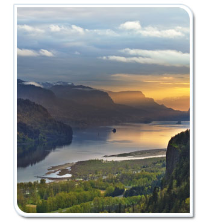

Today, the agency’s focus is vast. While staying true to its soil and agricultural roots, it has a more holistic view of conservation.
The agency assists landowners of all kinds in conserving all kinds of natural resources. It has contributed to tools and standards in agronomy, economics, forestry, and wildlife management. Additionally, it has seen Hammond’s view of a tailored approach to conservation realized, and focuses specific efforts depending on the nature of the specific conservation district.